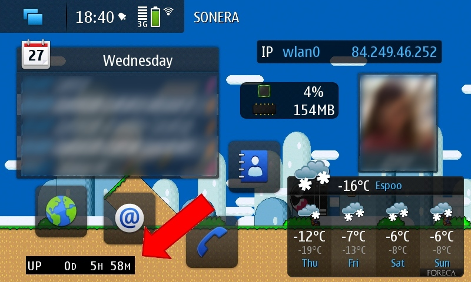

Uptime
Source: GitHub, rar
Widget for N900.
Shows phones current uptime.

CLASSES:
--------------------------
* Controller
- Has timer, interval 10sec
- If seconds are shown, it has own timer that just updates screen every second
- Both use same time object
- main timer checks time from system
- second timer just adds 1 sec to time object
- Saves record uptime to text file
- Compares current uptime to it and updates it if necessary
* DataGetter
- Either Win or Unix datagetter (this version works only with N900, so Win obsolete)
- Gets uptime string from process
- Unix uses uptime
- Windows uses Systeminfo.exe
* UptimeStruct (was struct, now object, bad naming)
- Time data and helper methods